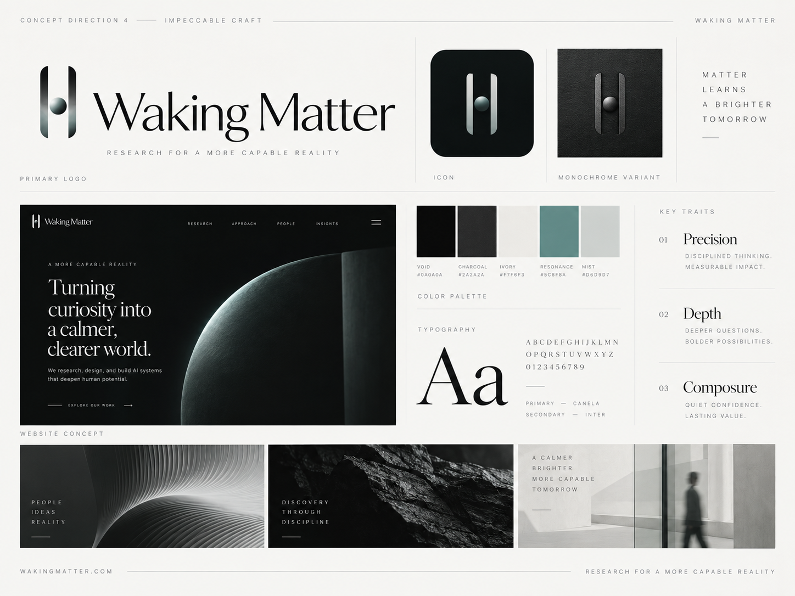

Production currently ships one frozen geometry: two perfectly symmetric stadiums
and a centered sphere. Independent review called that the failure we were
guarding against — a corporate H / clean-tech aperture. This board is the
missing 4–6 study. It does not replace brand/logos/. Newsreader
is a candidate wordmark, not canon.
01 Silhouette
Two vertical members and a sphere in the aperture. Not a letter H, not a planet, not a glow. The members should feel carved or worn, not extruded UI pills.
02 Tension
The sphere is held. It sits in a gap that is about a shaft-width, filling it. It should not read as a bullet pasted on a crossbar.
03 Word
The name is thin, inscriptional, high-contrast, archaeological-future. Canela on the board. Any substitute must keep that cut, not a newspaper body face.
04 Material
In colour, 04 is matte metal and stone. In one colour, that has to become silhouette: scoop, taper, mass, or a pocket. Direction 02 may inform only spacing and negative space — never bloom.
05 Scale
Must survive 16 / 24 / 32 px, a lockup at cap-height, and a monumental field. If the sphere dies at 16, say so.
06 Ownability
Archaeological ↔ future at once. Dune-like artifact, not a fintech helix. Calm enough to keep for a decade.

All cuts are one-colour, currentColor, same 120 viewBox. Control is the shipped geometry, shown as a warning, not a candidate.
On void
04’s Canela is high-contrast, thin-haired, archaeological. Newsreader is the licensed site candidate; it is softer and more literary. Fraunces (display optical, SOFT 0) and Cormorant Garamond are the other OFL cuts on this board. Pairings use D Catch, the working recommendation, plus A Relic as the board-fidelity check.
Newsreader · optical display
Fraunces · opsz 144, SOFT 0
Cormorant Garamond · 500
Five = strong for that axis. One = fails it. These are checkpoint scores, not a brand freeze.
| Archaeological ↔ future | Ownable | Not an H | 16–32 px | Monumental | Wordmark | |
|---|---|---|---|---|---|---|
| Control | 1 · extruded UI | 1 · generic helix | 1 · is an H | 5 · survives | 2 · a large letter | 3 · sits beside type, says nothing |
| A Relic | 4 · worn shafts, 04’s fill | 3 · still cousin to an H | 3 · waist helps, not enough | 4 · sphere holds at 16 | 4 · column, not a logo bug | 4 · calm with a sharp serif |
| B Throat | 3 · clamp / magnet | 3 · distinctive, a bit toy | 4 · pinch kills the H | 2 · sphere dies at 16 | 4 · strong pinch at scale | 3 · heavy next to thin type |
| C Menhir | 5 · gate of stones | 4 · Dune without costume | 5 · cannot be an H | 3 · high sphere thins out | 5 · landscape | 4 · especially with Fraunces |
| D Catch | 5 · bearing in a tool | 5 · not a letter, not a trend | 5 · pocket, not a bar | 4 · pocket reads at 24; 16 is tight | 5 · artifact | 5 · the held sphere talks to the name |
| E Token | 3 · seal, a little mute | 3 · heavy, familiar | 3 · low sphere helps | 4 · mass survives | 4 · as a carved block | 2 · overpowers thin type |
| F Taper | 5 · obelisk / stillsuit hardware | 5 · ownable silhouette | 5 · an A-gate, not an H | 3 · sphere small at 16 | 5 · architecture | 4 · needs a sharper serif than Newsreader |
It is the only cut where the sphere is structurally held — lips closer than the ball, a bay cut into the shaft — which is the 04 idea that the stadium H erased. It is the least like a corporate letter. It still belongs to the same family as the board (two members, one matter, an aperture).
Keep A Relic in the room as the fidelity check: it is the closest one-colour reconstruction of 04’s proportion and fill. Do not ship it as-is; it still reads H at a glance. Keep F Taper as the alternate if Catch’s pocket feels too clever, or if small-size needs a simpler silhouette with a larger sphere.
Wordmark: Fraunces at display optical, SOFT 0 is closer to 04’s inscriptional Canela than Newsreader. Newsreader remains acceptable for article body. Cormorant is too costume. Do not freeze type until the mark is chosen.
Production masters in brand/logos/ and the site lockup are
unchanged. This checkpoint is for independent review. Do not merge. Do not
proceed to further site polish on the strength of Control.